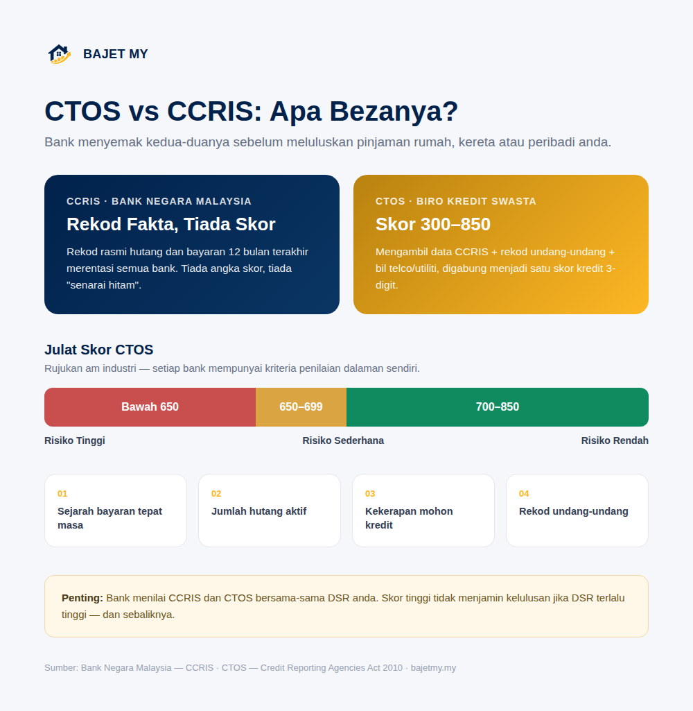

Ramai yang keliru antara CTOS dan CCRIS, atau menganggap kedua-duanya perkara yang sama. Sebenarnya ia dua sistem berbeza — dan bank menyemak kedua-duanya sebelum meluluskan pinjaman rumah, kereta atau peribadi anda.

CCRIS: Rekod Rasmi Bank Negara Malaysia
CCRIS (Central Credit Reference Information System) ialah pangkalan data yang dikendalikan oleh Bank Negara Malaysia. Ia mengandungi rekod fakta tentang hutang anda — tiada skor angka, tiada "senarai hitam".
CCRIS memaparkan:
- Baki hutang tertunggak di semua institusi kewangan
- Rekod bayaran bulanan 12 bulan terakhir, dalam bentuk kod (0 = bayar tepat masa, 1 = tertunggak sebulan, 2 = tertunggak dua bulan, dan seterusnya)
- Permohonan kredit baharu yang dibuat baru-baru ini
- Akaun dalam "special attention" (tunggakan berterusan)
Bank menggunakan CCRIS untuk melihat sejarah bayaran sebenar anda merentasi semua bank dan institusi kewangan berlesen di Malaysia.
CTOS: Biro Kredit Swasta
CTOS ialah agensi pelaporan kredit swasta terbesar di Malaysia, beroperasi di bawah Credit Reporting Agencies Act 2010. Berbeza daripada CCRIS, CTOS:
- Mengambil data daripada CCRIS
- Menambah rekod undang-undang (saman, penghakiman, kebankrapan)
- Menambah rekod bil telco dan utiliti
- Menggabungkan semuanya menjadi satu skor 3-digit antara 300 hingga 850
| Julat Skor CTOS | Kategori | Kesan Kepada Pinjaman |
|---|---|---|
| 700 – 850 | Risiko rendah | Peluang kelulusan lebih tinggi |
| 650 – 699 | Risiko sederhana | Mungkin diluluskan, tetapi dengan syarat lebih ketat |
| Bawah 650 | Risiko tinggi | Kemungkinan ditolak atau kadar faedah lebih tinggi |
Nota: Julat ini adalah rujukan am industri. Setiap bank mempunyai kriteria penilaian dalaman sendiri dan tidak semestinya menolak permohonan hanya kerana satu angka skor.
Apa yang menjejaskan skor kredit anda?
Antara faktor utama:
- Sejarah bayaran — bayaran lewat atau tertunggak memberi kesan paling besar
- Jumlah hutang aktif — terlalu banyak kad kredit atau pinjaman serentak
- Kekerapan permohonan kredit — terlalu kerap memohon kad/pinjaman dalam tempoh singkat boleh dilihat sebagai risiko
- Rekod undang-undang — saman, penghakiman mahkamah atau kebankrapan
- Tempoh sejarah kredit — sejarah yang lebih panjang dan konsisten biasanya lebih baik
Kenapa ini penting sebelum memohon pinjaman?
Bank menilai CCRIS dan CTOS bersama-sama DSR (Debt Service Ratio) anda semasa memproses permohonan pinjaman rumah, kereta atau peribadi. DSR menunjukkan kemampuan anda membayar berdasarkan pendapatan, manakala CCRIS/CTOS menunjukkan tabiat bayaran anda pada masa lalu.
Seseorang dengan DSR rendah tetapi rekod bayaran lewat berulang masih berisiko ditolak. Sebaliknya, seseorang dengan DSR tinggi jarang diluluskan walaupun rekod bayaran bersih.
Jika anda merancang memohon pinjaman besar seperti rumah, semak DSR anda dahulu menggunakan kalkulator di bawah, dan pastikan rekod bayaran bulanan anda kemas sekurang-kurangnya 6-12 bulan sebelum memohon.
Bagaimana menyemak skor kredit anda?
- CCRIS: boleh disemak secara percuma melalui portal e-CCRIS Bank Negara Malaysia
- CTOS: laporan asas boleh disemak melalui laman rasmi CTOS, dengan caj untuk laporan terperinci
Semak rekod anda sebelum memohon pinjaman besar supaya sebarang kesilapan atau maklumat lapuk boleh diperbetulkan awal.
Cara memperbaiki skor kredit
- Bayar semua ansuran tepat pada masa, tanpa gagal
- Kurangkan bilangan kad kredit/pinjaman aktif yang tidak diperlukan
- Elakkan memohon banyak kredit dalam tempoh singkat
- Selesaikan tunggakan sedia ada secepat mungkin
- Semak laporan kredit anda secara berkala untuk kesan kesilapan
Penting: Tiada cara untuk "membaiki" skor kredit dalam masa semalaman. Ia terbina daripada tabiat bayaran yang konsisten dari semasa ke semasa.
Ringkasan
CCRIS ialah rekod fakta rasmi BNM tentang hutang dan bayaran anda, manakala CTOS ialah skor 3-digit (300-850) yang dikira oleh biro kredit swasta berdasarkan CCRIS dan rekod tambahan lain. Bank menilai kedua-duanya bersama DSR sebelum meluluskan sebarang pinjaman.
Jaga rekod bayaran anda, semak laporan kredit secara berkala, dan fahami DSR anda sebelum memohon pinjaman besar.
Sumber
- Bank Negara Malaysia — CCRIS
- CTOS — Credit Reporting Agencies Act 2010